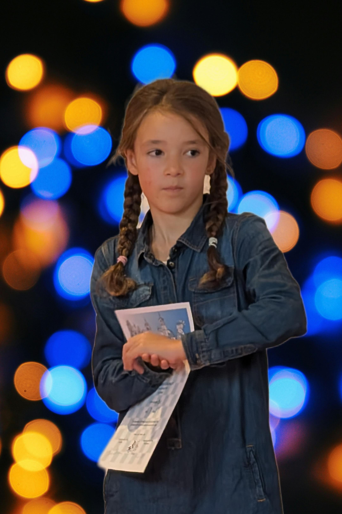

Neuigkeiten
- 2025 NEU! NEU! Jeden Dienstag ab 15:00 Uhr: Kaffeehausschach im Bellaggio Gelateria, Unterer Stadtplatz 11, Kufstein (auf Initiative von Heinrich Doll 0664 180 8490)
- 22.06.25: Roman Haselsberger erzielt 50 % bei der Jugendstaatsmeisterschaft U14 in Fürstenfeld
- 21.06.25: Siegfried Neuschmied wird Österreichischer Meister Blitzschach Ü60 (Sport Finals Innsbruck)
- 20.06.25: Siegfried Neuschmied verteidigt seinen Titel Österreichischer Meister Schnellschach Ü60 (Sport Finals Innsbruck)
- 19.06.25: Armin Haselsberger gewinnt erstmals gegen einen Großmeister bei der Schnellschach Staatsmeisterschaft
- 31.05.25: Siegfried Neuschmied mit 6,5 aus 7 Sieger des Bodensee-Senioren-Opens 2025
-
27.04.2025: Linda Haselsberger erreicht beim Schachrallye-Turnier in Jenbach einen 3. Platz in der Gruppe B (U8–U10) mit 4 Punkten!

- 09.02.25: Linda Haselsberger (U8) und Roman Haselsberger (U14) gewinnen bei den Tiroler Jungendmeisterschaften.
- 17.01. - 19.01.25: Der Schachklub Kufstein veranstaltet das Bundesligawochenende für die 2.Klasse West.
- 06.01.25: Siegfried Neuschmied wird Tiroler Meister im Blitzschach.
- 17.10.24: Beginn des Schachunterrichts am BRG Wörgl.
- 31.08.24: Armin Haselsberger gewinnt das B-Turnier des Tiroler Schach Opens.
- 14.07.24: Roman und Yehor sind auf der ASVÖ-Schach-und-Sportwoche in St. Veit.
-
23.06.24: FM Siegfried Neuschmied gewinnt das Internationale Bodenseeopen Senioren 2024.

- Regelmäßig: 5 Jugendspieler spielen übers Jahr die Schachrallys, mit ersten Plätzen für Yehor Pashkovskyi und Roman Haselsberger.
- 30.05.24: Siegfried Neuschmied wird Österreichischer Meister im Schnellschach U60.
- 25.05.24: Über 200 Kinder besuchen unseren Stand beim ASVÖ-Familiensporttag in Wörgl.
- 10.02.24: Armin Haselsberger wird Tiroler Meister U16, Roman Haselsberger Vizemeister U14.
- 19.-21.01.24: Wir sind Veranstalter von drei Bundesligarunden in Kufstein.
- 06.01.24: Armin Haselsberger schafft es ins A-Finale des Dreikönigsturniers in Schwaz.